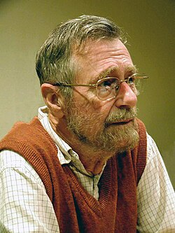
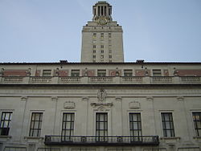
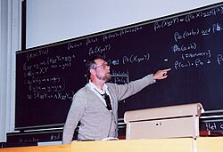

Edsger W. Dijkstra | |
|---|---|
 Dijkstra in 2002 | |
| Born | 11 May 1930 Rotterdam, Netherlands |
| Died | 6 August 2002 (aged 72) Nuenen, Netherlands |
| Education | Leiden University (BS, MS) University of Amsterdam (PhD) |
| Spouse | Ria C. Debets |
| Children | Marcus, Femke, Rutger |
| Awards |
|
| Scientific career | |
| Fields | |
| Institutions | |
| Thesis | Communication with an Automatic Computer (1959) |
| Adriaan van Wijngaarden | |
Doctoral students | |
Edsger Wybe Dijkstra (/ˈdaɪkstrə/ DYKE-strə; Dutch: [ˈɛtsxər ˈʋibə ˈdɛikstraː] ⓘ; 11 May 1930 – 6 August 2002) was a Dutch computer scientist, programmer, mathematician, and science essayist.[1][2]
Born in Rotterdam in the Netherlands, Dijkstra studied mathematics and physics and then theoretical physics at the University of Leiden. Adriaan van Wijngaarden offered him a job as the first computer programmer in the Netherlands at the Mathematical Centre in Amsterdam, where he worked from 1952 until 1962. He formulated and solved the shortest path problem in 1956, and in 1960 developed the first compiler for the programming language ALGOL 60 in conjunction with colleague Jaap A. Zonneveld. In 1962 he moved to Eindhoven, and later to Nuenen, where he became a professor in the Mathematics Department at the Technische Hogeschool Eindhoven. In the late 1960s, he built the THE multiprogramming system, which influenced the designs of subsequent systems through its use of software-based paged virtual memory. Dijkstra joined Burroughs Corporation as its sole research fellow in August 1973. The Burroughs years saw him at his most prolific in output of research articles. He wrote nearly 500 documents in the "EWD" series, most of them technical reports, for private circulation within a select group.
Dijkstra accepted the Schlumberger Centennial Chair in the Computer Science Department at the University of Texas at Austin in 1984, working in Austin, USA, until his retirement in November 1999. He and his wife returned from Austin to his original house in Nuenen, where he died on 6 August 2002 after a long struggle with cancer.[3]
He received the 1972 ACM Turing Award for fundamental contributions to developing structured programming languages. Shortly before his death, he received the ACM PODC Influential Paper Award in distributed computing for his work on self-stabilization of program computation. This annual award was renamed the Dijkstra Prize the following year, in his honor.
Dijkstra was born in Rotterdam. His father Douwe Wybe Dijkstra[4] (1898–1970) was a chemist who studied with Frans Maurits Jaeger and was president of the Rotterdamsche Chemische Kring, the Rotterdam branch of the Royal Netherlands Chemical Society; he taught chemistry at a secondary school and was later its superintendent. His mother Brechtje Cornelia Kluijver (1900–1994) was a mathematician but never had a formal job.[5][6][7]
Dijkstra had considered a career in law and had hoped to represent the Netherlands in the United Nations. However, after graduating from Gymnasium Erasmianum in 1948, at his parents' suggestion he studied mathematics and physics and then theoretical physics at the University of Leiden.[8]
In the early 1950s, electronic computers were a novelty. Dijkstra stumbled on his career by accident, and through his supervisor, Professor Johannes Haantjes, he met Adriaan van Wijngaarden, the director of the Computation Department at the Mathematical Centre in Amsterdam, who offered Dijkstra a job; he officially became the Netherlands' first "programmer" in March 1952.[8]
Dijkstra remained committed to physics for some time, working on it in Leiden three days out of each week. With increasing exposure to computing, however, his focus began to shift. As he recalled:[9]
After having programmed for some three years, I had a discussion with A. van Wijngaarden, who was then my boss at the Mathematical Center in Amsterdam, a discussion for which I shall remain grateful to him as long as I live. The point was that I was supposed to study theoretical physics at the University of Leiden simultaneously, and as I found the two activities harder and harder to combine, I had to make up my mind, either to stop programming and become a real, respectable theoretical physicist, or to carry my study of physics to a formal completion only, with a minimum of effort, and to become....., yes what? A programmer? But was that a respectable profession? For after all, what was programming? Where was the sound body of knowledge that could support it as an intellectually respectable discipline? I remember quite vividly how I envied my hardware colleagues, who, when asked about their professional competence, could at least point out that they knew everything about vacuum tubes, amplifiers and the rest, whereas I felt that, when faced with that question, I would stand empty-handed. Full of misgivings I knocked on Van Wijngaarden's office door, asking him whether I could "speak to him for a moment"; when I left his office a number of hours later, I was another person. For after having listened to my problems patiently, he agreed that up till that moment there was not much of a programming discipline, but then he went on to explain quietly that automatic computers were here to stay, that we were just at the beginning and could not I be one of the persons called to make programming a respectable discipline in the years to come? This was a turning point in my life and I completed my study of physics formally as quickly as I could.
— Edsger Dijkstra, The Humble Programmer (EWD340), Communications of the ACM
When Dijkstra married Maria "Ria" C. Debets in 1957, he was required as a part of the marriage rites to state his profession. He stated that he was a programmer, which was unacceptable to the authorities, there being no such profession then in The Netherlands.[9][10]
In 1959, he received his PhD from the University of Amsterdam for a thesis entitled 'Communication with an Automatic Computer',[11] devoted to a description of the assembly language designed for the first commercial computer developed in the Netherlands, the Electrologica X1. His thesis supervisor was Van Wijngaarden.[12]
From 1952 until 1962, Dijkstra worked at the Mathematisch Centrum in Amsterdam,[12] where he worked closely with Bram Jan Loopstra and Carel S. Scholten, who had been hired to build a computer. Their mode of interaction was disciplined: They would first decide upon the interface between the hardware and the software, by writing a programming manual. Then the hardware designers would have to be faithful to their part of the contract, while Dijkstra, the programmer, would write software for the nonexistent machine. Two of the lessons he learned from this experience were the importance of clear documentation, and that program debugging can be largely avoided through careful design.[8] Dijkstra formulated and solved the shortest path problem for a demonstration at the official inauguration of the ARMAC computer in 1956. Because of the absence of journals dedicated to automatic computing, he did not publish the result until 1959.
At the Mathematical Centre, Dijkstra and his colleague Jaap Zonneveld developed the first compiler for the programming language ALGOL 60 by August 1960, more than a year before a compiler was produced by another group.[8] ALGOL 60 is known as a key advance in the rise of structured programming.
In 1962, Dijkstra moved to Eindhoven, and later to Nuenen, in the south of the Netherlands, where he became a professor in the Mathematics Department at the Eindhoven University of Technology.[12] The university did not have a separate computer science department and the culture of the mathematics department did not particularly suit him. Dijkstra tried to build a group of computer scientists who could collaborate on solving problems. This was an unusual model of research for the Mathematics Department.[8] In the late 1960s, he built the THE operating system (named for the university, then known as Technische Hogeschool Eindhoven), which has influenced the designs of subsequent operating systems through its use of software-based paged virtual memory.[13]
Dijkstra joined the Burroughs Corporation—a company known then for producing computers based on an innovative hardware architecture—as its research fellow in August 1973. His duties consisted of visiting some of the firm's research centers a few times a year and carrying on his own research, which he did in the smallest Burroughs research facility, namely, his study on the second floor of his house in Nuenen. In fact, Dijkstra was the only research fellow of Burroughs and worked for it from home, occasionally travelling to its branches in the United States. As a result, he reduced his appointment at the university to one day a week. That day, Tuesday, soon became known as the day of the famous 'Tuesday Afternoon Club', a seminar during which he discussed with his colleagues scientific articles, looking at all aspects: notation, organisation, presentation, language, content, etc. Shortly after, he moved in 1984 to the University of Texas at Austin (USA), a new 'branch' of the Tuesday Afternoon Club emerged in Austin, Texas.[12]
The Burroughs years saw him at his most prolific in output of research articles. He wrote nearly 500 documents in the EWD series, most of them technical reports, for private circulation within a select group.[8]

Dijkstra accepted the Schlumberger Centennial Chair in the Computer Science Department at the University of Texas at Austin in 1984.[14]
Dijkstra worked in Austin until his retirement in November 1999. To mark the occasion and to celebrate his forty-plus years of seminal contributions to computing science, the Department of Computer Sciences organized a symposium, which took place on his 70th birthday in May 2000.[8]
Dijkstra and his wife returned from Austin to his original house in Nuenen, Netherlands, where he found that he had only months to live. He said that he wanted to retire in Austin, Texas, but to die in the Netherlands. Dijkstra died on 6 August 2002 after a long struggle with cancer.[3][15][16][17] He and his wife were survived by their three children: Marcus, Femke, and the computer scientist Rutger M. Dijkstra.[18]

You can hardly blame M.I.T. for not taking notice of an obscure computer scientist in a small town in the Netherlands.
— Dijkstra, said about himself in Nuenen in the mid-1960s.[20]
In the world of computing science, Dijkstra is well known as a "character". In the preface of his book A Discipline of Programming (1976) he stated the following: "For the absence of a bibliography I offer neither explanation nor apology." In fact, most of his articles and books have no references at all.[12] Dijkstra chose this way of working to preserve his self-reliance.[21]
As a university professor for much of his life, Dijkstra saw teaching not just as a required activity but as a serious research endeavour.[8] His approach to teaching was unconventional.[22] His lecturing style has been described as idiosyncratic. When lecturing, the long pauses between sentences have often been attributed to the fact that English is not Dijkstra's first language. However the pauses also served as a way for him to think on his feet and he was regarded as a quick and deep thinker while engaged in the act of lecturing. His courses for students in Austin had little to do with computer science but they dealt with the presentation of mathematical proofs.[12] At the beginning of each semester, he would take a photo of each of his students in order to memorize their names. He never followed a textbook, with the possible exception of his own while it was under preparation. When lecturing, he would write proofs in chalk on a blackboard rather than using overhead foils. He invited the students to suggest ideas, which he then explored, or refused to explore because they violated some of his tenets. He assigned challenging homework problems, and would study his students' solutions thoroughly. He conducted his final examinations orally, over a whole week. Each student was examined in Dijkstra's office or home, and an exam lasted several hours.[8]
Dijkstra was also highly original in his way of assessing people's capacity for a job. When Vladimir Lifschitz came to Austin in 1990 for a job interview, Dijkstra gave him a puzzle. Lifschitz solved it and has been working in Austin since then.[12]
He avoided the use of computers in his own work for many decades. Even after he succumbed to his UT colleagues' encouragement and acquired a Macintosh computer, he used it only for e-mail and for browsing the World Wide Web.[8] Dijkstra never wrote his articles using a computer. He preferred to rely on his typewriter and later on his Montblanc pen.[12] Dijkstra's favorite writing instrument was the Montblanc Meisterstück fountain pen.
He had no use for word processors, believing that one should be able to write a letter or article without rough drafts, rewriting, or any significant editing. He would work it all out in his head before putting pen to paper, and once mentioned that when he was a physics student he would solve his homework problems in his head while walking the streets of Leiden.[8] Most of Dijkstra's publications were written by him alone. He never had a secretary and took care of all his correspondence alone.[12] When colleagues prepared a Festschrift for his sixtieth birthday, published by Springer-Verlag, he took the trouble to thank each of the 61 contributors separately, in a hand-written letter.[12]
In The Humble Programmer (1972), Dijkstra wrote: "We must not forget that it is not our [computing scientists'] business to make programs, it is our business to design classes of computations that will display a desired behaviour."
Dijkstra also opposed the inclusion of software engineering under the umbrella of academic computer science. He wrote that, "As economics is known as 'The Miserable Science', software engineering should be known as 'The Doomed Discipline', doomed because it cannot even approach its goal since its goal is self-contradictory," and "software engineering has accepted as its charter 'How to program if you cannot.'"[23]
Dijkstra led a modest lifestyle to the point of "being spartan".[12] His and his wife's house in Nuenen was simple, small and unassuming. He did not own a television, a video player, or a mobile telephone, and did not go to the movies.[12] He played the piano, and, while in Austin, liked to go to concerts. An enthusiastic listener of classical music, Dijkstra's favorite composer was Mozart.[8]
Throughout Dijkstra's career, his work was characterized by elegance and economy.[12] A prolific writer (especially as an essayist), Dijkstra authored more than 1,300 papers, many written by hand in his precise script. They were essays and parables; fairy tales and warnings; comprehensive explanation and pedagogical pretext. Most were about mathematics and computer science; others were trip reports that are more revealing about their author than about the people and places visited. It was his habit to copy each paper and circulate it to a small group of colleagues who would copy and forward the papers to another limited group of scientists.[2]
Dijkstra was well known for his habit of carefully composing manuscripts with his fountain pen. The manuscripts are called EWDs, since Dijkstra numbered them with EWD, his initials, as a prefix. According to Dijkstra himself, the EWDs started when he moved from the Mathematical Centre in Amsterdam to the Eindhoven University of Technology (then Technische Hogeschool Eindhoven). After going to Eindhoven, Dijkstra experienced a writer's block for more than a year. He distributed photocopies of a new EWD among his colleagues. Many recipients photocopied and forwarded their copies, so the EWDs spread throughout the international computer science community. The topics were computer science and mathematics, and included trip reports, letters, and speeches. These short articles span a period of 40 years. Almost all EWDs appearing after 1972 were hand-written. They are rarely longer than 15 pages and are consecutively numbered. The last one, No. 1318, is from 14 April 2002. Within computer science they are known as the EWD reports, or, simply the EWDs. More than 1300 EWDs have been scanned, with a growing number transcribed to facilitate search, and are available online at the Dijkstra archive on the website of the University of Texas.[24]
Dijkstra thought simplicity and elegance were important in computer science and in mathematics. His interest in simplicity came at an early age and under his mother's guidance. He once said he had asked his mother whether trigonometry was a difficult topic. She replied that he must learn all the formulas and that, further, if he required more than five lines to prove something, he was on the wrong track.[25]
He thought that in large programs, where there was a potential for messiness, it was vital to seek elegance.[26] With deliberate hyperbole,[27] he wrote that “in the practice of computing, where we have so much latitude for making a mess of it, mathematical elegance is not a dispensable luxury, but a matter of life and death”.[28]
Dijkstra was famous for his wit, eloquence, rudeness, abruptness and often cruelty to fellow professionals, and way with words, such as in his remark, "The question of whether Machines Can Think (…) is about as relevant as the question of whether Submarines Can Swim."[29] His advice to a promising researcher, who asked how to select a topic for research, was the phrase: "Do only what only you can do".[8] Dijkstra was also known for his vocal criticism and absence of social skills when interacting with colleagues. As an outspoken and critical visionary, he strongly opposed the teaching of BASIC.[30]
In many of his more witty essays, Dijkstra described a fictional company of which he served as chairman. The company was called Mathematics, Inc., a company that he imagined having commercialized the production of mathematical theorems in the same way that software companies had commercialized the production of computer programs. He invented a number of activities and challenges of Mathematics Inc. and documented them in several papers in the EWD series. The imaginary company had produced a proof of the Riemann Hypothesis but then had great difficulties collecting royalties from mathematicians who had proved results assuming the Riemann Hypothesis. The proof itself was a trade secret.[31] Many of the company's proofs were rushed out the door and then much of the company's effort had to be spent on maintenance.[32] A more successful effort was the Standard Proof for Pythagoras' Theorem, that replaced the more than 100 incompatible existing proofs.[33] Dijkstra described Mathematics Inc. as "the most exciting and most miserable business ever conceived".[31] EWD 443 (1974) describes his fictional company as having over 75% of the world's market share.[34][35]
Dijkstra won the Turing award in 1972 for his advocacy of structured programming, a programming paradigm that makes use of structured control flow as opposed to unstructured jumps to different sections in a program using Goto statements. His 1968 letter to the editor of Communications of ACM, "Go To statement considered harmful", caused a major debate. Modern programmers generally adhere to the paradigm of structured programming.[14]
Among his most famous contributions to computer science is Dijkstra's algorithm, for finding the shortest path through a network, which is widely taught in modern computer science undergraduate courses, and is used in the computer network routing protocols OSPF and IS-IS.[36][37]
Other important work included the Shunting yard algorithm for parsing; the "THE" operating system, an early example of structuring an operating system as a set of layers; the Banker's algorithm for resource allocation; and the semaphore construct for coordinating multiple processes. Another concept formulated by Dijkstra in the field of distributed computing is that of self-stabilization, a method of ensuring fault-tolerance.
Luca Cardelli designed a Dijkstra font to mimic Dijkstra's writing style which had become so recognizable among computer scientists in the 1980s.[38]
Among Dijkstra's awards and honors are:[8]
In 1969, the British Computer Society (BCS) received approval for an award and fellowship, Distinguished Fellow of the British Computer Society (DFBCS), to be awarded under bylaw 7 of their royal charter. In 1971, the first election was made, to Dijkstra.[43]
In 1990, on occasion of Dijkstra's 60th birthday, the Department of Computer Science (UTCS) at the University of Texas at Austin organized a two-day seminar in his honor. Speakers came from all over the United States and Europe, and a group of computer scientists contributed research articles which were edited into a book.[44]
In 2002, the C&C Foundation of Japan recognized Dijkstra "for his pioneering contributions to the establishment of the scientific basis for computer software through creative research in basic software theory, algorithm theory, structured programming, and semaphores." Dijkstra was alive to receive notice of the award, but it was accepted by his family in an award ceremony after his death.
Shortly before his death in 2002, Dijkstra received the ACM PODC Influential-Paper Award in distributed computing for his work on self-stabilization of program computation. This annual award was renamed the Dijkstra Prize (Edsger W. Dijkstra Prize in Distributed Computing) the following year, in his honor.
The Dijkstra Award for Outstanding Academic Achievement in Computer Science (Loyola University Chicago, Department of Computer Science) is named for Edsger W. Dijkstra. Beginning in 2005, this award recognizes the top academic performance by a graduating computer science major. Selection is based on GPA in all major courses and election by department faculty.[45]
The Department of Computer Science (UTCS) at the University of Texas at Austin hosted the inaugural Edsger W. Dijkstra Memorial Lecture on 12 October 2010. Tony Hoare, Emeritus Professor at Oxford and Principal Researcher at Microsoft Research, was the speaker for the event. This lecture series was made possible by a generous grant from Schlumberger to honor the memory of Dijkstra.
This section may contain unverified or indiscriminate information in embedded lists. (November 2023) |
{{cite journal}}: Cite uses deprecated parameter |citeseerx= (help)Alan M. Turing thought about criteria to settle the question of whether Machines Can Think, a question of which we now know that it is about as relevant as the question of whether Submarines Can Swim.(transcription), 1984
{kind=link}
{kind=link}
{kind=link}
{kind=link}